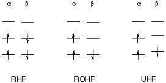
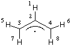

While UHF calculations on open shell systems usually give lower energies and
a better description of the unpaired electron density distribution (and thus EPR
spectra), the UHF wavefunction is not an eigenfunction of the <S2>
operator. In particular for spin-delocalized systems such as allylic or benzylic
radicals, the UHF wavefunction can deviate substantially from that for a doublet state.
The degree of deviation can be characterized through the difference between
the expectation value of the <S2> operator (given after the
SCF convergence note in the output file) and the value of S(S+1) for the
current spin quantum number of the system. For a doublet state S=0.5 and
S(S+1) = 0.750. The allyl radical will be used here to illustrate the situation
at the UHF/STO-3G level of theory:
#UHF/STO-3G scf=(direct,tight) UHF/STO-3G structure of allyl radical 0 2 H C,1,r2 C,2,r3,1,a3 C,2,r3,1,a3,3,180.,0 H,3,r5,2,a5,1,0.,0 H,4,r5,2,a5,1,0.,0 H,3,r7,2,a7,1,180.,0 H,4,r7,2,a7,1,180.,0 r2=1.08424658 r3=1.40526604 r5=1.08095381 r7=1.08131649 a3=117.99450641 a5=121.41544408 a7=121.21891262 |  |
last changes: 22.11.2004, HZ questions & comments to: zipse@cup.uni-muenchen.de